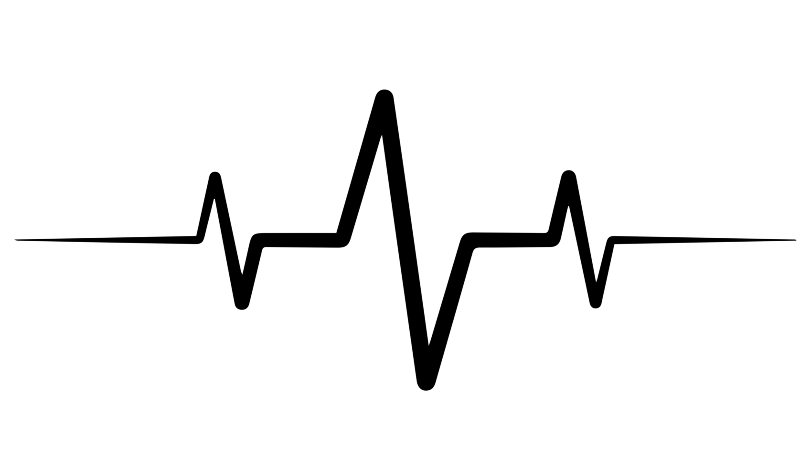

  <div class="hole">
    <div class="body">
      <div class="mobile-outline">
        <div class="status-bar">
            <div class="time">{{currentTime}}</div>
            <div class="status-icons">
              <span class="battery">🔋</span>
                <span class="signal">📶</span>
            </div>
        </div>
        <div *ngIf="wallpaperhide"class="wallpaper">
          <div class="pulse-container">
            
          </div>
            <!-- <button  class="fab-button" (click)="click()">Audio Pulse</button> -->
            <button class="fab-button"  (click)="click()">
              <i class="fas fa-microphone" ></i> Audio Pulse
          </button>
        </div>
        <div class="container">
        <div class="center">
    <div  class="">
      <h2>Speech To Text</h2>
    </div>
    </div>
          <!-- Main Content -->
          <div class="main-content">
              <div *ngIf="currentSection === 'record'" class="audio-recorder">
                  <div class="controls">
                      <button *ngIf="!isRecording" (click)="start()" class="btn start-btn">
                          <i class="fas fa-microphone"></i> Start Recording
                      </button>
                      <button *ngIf="isRecording" (click)="stop()" class="btn stop-btn">
                          <i class="fas fa-stop"></i> Stop Recording
                      </button>
                  </div>

                  <div *ngIf="isRecording" class="recording-indicator">
                      
                  </div>

                  <div class="recording-time" *ngIf="recordedTime">
                      {{ recordedTime }}
                  </div>

                  <div *ngIf="!isRecording && blobUrl" class="audio-player">
                      <audio controls>
                          <source [src]="blobUrl" type="audio/webm">
                          Your browser does not support the audio element.
                      </audio>
                  </div>
                  <section *ngIf="transcript$ | async">
                    <mat-card class="notification mat-elevation-z4">{{transcript$ | async}}</mat-card>
                  </section>
                  <section>
                    <mat-form-field class="speech-result-width">
                      <textarea matInput [value]="totalTranscript || ''" placeholder="Speech Input Result" rows="15" disabled="true"></textarea>
                    </mat-form-field>
                  </section>
              </div>
          </div>
      </div>
        <div class="navigation-bar">
          <button class="nav-button" (click)="goBack()"><i class="fas fa-arrow-left"></i></button>
          <button class="nav-button" ><i class="fas fa-home"></i></button>
          <button class="nav-button" ><i class="fas fa-tasks"></i></button>
      </div>
    </div>
    </div>
    </div>
